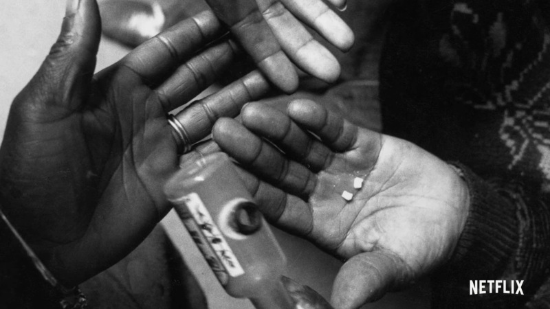
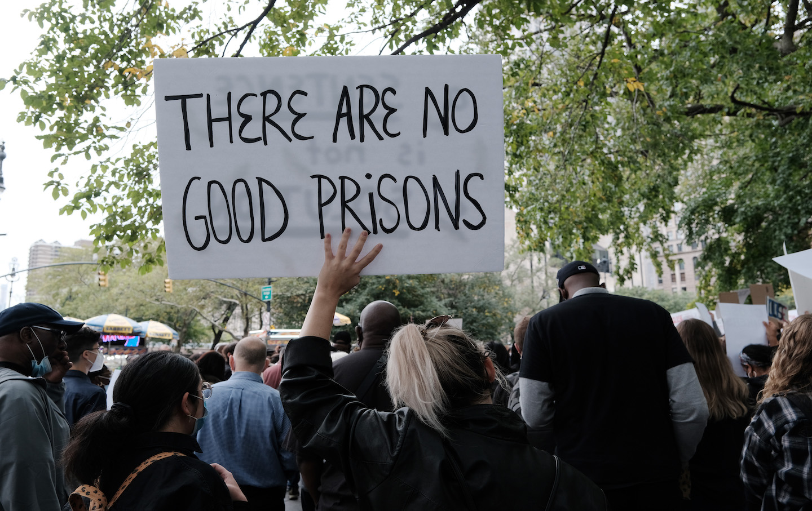

U.S. HISTORY • SEMESTER 2 • LESSON 08 • STANDARD 11.11
THE BROKEN PROMISE
ESSENTIAL QUESTION
How did the 1970s and 1980s break the promise that a better America was coming?
THE BROKEN PROMISE • 1965 TO 1992
1965
Civil Rights Act and Voting Rights Act pass. Legal equality is won. The question of economic equality is left unanswered.
1972–74
Watergate: Nixon's campaign breaks into Democratic offices and covers it up. Nixon resigns August 9, 1974. Trust in government collapses.
1970–80
Factories close across the industrial Midwest. Detroit, Cleveland, and Pittsburgh lose hundreds of thousands of jobs and residents.
Mid-1980s
Crack cocaine arrives in deindustrialized cities. Congress responds with the Anti-Drug Abuse Act, creating harsh mandatory prison sentences.
1980–88
Reagan wins the presidency twice by arguing government is the problem. Tax cuts, military spending, and reduced social programs reshape America.
In the summer of 1965, two of the most important laws in American history were signed within weeks of each other. The Voting Rights Act guaranteed Black Americans the right to vote without intimidation or barriers. Medicare and Medicaid guaranteed health coverage for the elderly and the poor. It felt like the country was finally delivering on promises it had made but never kept. It felt like the arc of history was bending toward something better.
In the summer of 1965, two landmark laws were signed within weeks of each other. The Voting Rights Act guaranteed Black Americans the right to vote. Medicare and Medicaid guaranteed health care for the elderly and the poor. It felt like the country was finally making good on its promises.
What followed over the next twenty-five years told a more complicated story. A president committed crimes and resigned in disgrace. Factories shut down and entire cities lost their economic foundations. Crack cocaine arrived into communities that had already lost everything else, and the government's response was to imprison people rather than help them. Then a president won two elections by arguing that government itself was the enemy. By 1992, the America that had seemed so close in 1965 felt very far away for millions of people who had been waiting for it.
What followed over the next twenty-five years was a different kind of story. A president committed crimes and resigned. Factories closed and cities fell apart. Crack cocaine arrived in communities that had already lost everything, and the government responded by sending people to prison. Then a president won by arguing that government itself was the problem. By 1992, the promise of 1965 felt very far away for millions of Americans.
CHAPTER ONE
WATERGATE: THE FIRST CRACK
The Senate Watergate Committee hearings, 1973, broadcast live on national television. Millions of Americans watched as White House aides testified about crimes committed by the president's campaign. Source: Wikimedia Commons.
On the night of June 17, 1972, five men in business suits were arrested inside the Democratic National Committee headquarters at the Watergate hotel in Washington DC. They were carrying bugging equipment and address books linked to the Committee to Re-Elect the President. The burglary itself was clumsy and minor. What turned it into a constitutional crisisA situation in which the government breaks down or the rules are violated so severely that the normal functioning of democracy is threatened. was what came next: the cover-up.
On the night of June 17, 1972, five men were arrested inside the Democratic Party's headquarters at the Watergate hotel in Washington DC. They were carrying bugging equipment connected to President Nixon's re-election campaign. The break-in itself was clumsy. What made it a crisis was what Nixon did next: the cover-up.
President Nixon used the CIA, the FBI, and members of his own staff to block the investigation. He paid hush money to keep the burglars silent. When special prosecutor Archibald Cox demanded the secret White House tape recordings, Nixon fired him in what became known as the Saturday Night MassacreThe October 1973 night when Nixon ordered the firing of special prosecutor Archibald Cox, leading two top Justice Department officials to resign in protest.. When the tapes were finally released, they proved Nixon had ordered the cover-up himself just days after the break-in. He resigned on August 9, 1974: the only president in American history to do so.
Nixon used the CIA and FBI to block the investigation. He paid people to stay quiet. When a special prosecutor demanded secret White House tape recordings, Nixon fired him. When the tapes were finally released, they proved Nixon had ordered the cover-up himself. He resigned on August 9, 1974: the only president in American history ever to resign.
Watergate did not just remove a president. It permanently damaged Americans' trust in their government. Polls measuring trust in the federal government fell from about 75 percent in 1958 to under 30 percent by 1980. Vietnam had already shaken that trust; Watergate finished the job. The country's confidence that government told the truth and operated honestly never fully recovered. That collapse of trust is the first broken piece of the promise this lesson is about.
Watergate did not just remove a president. It permanently damaged trust in government. Trust in the federal government fell from about 75 percent in 1958 to under 30 percent by 1980. Vietnam had already hurt that trust. Watergate finished the job. Americans' confidence that their government told the truth never fully came back.
DID YOU KNOW
The most famous evidence in the Watergate investigation was a set of tape recordings Nixon had secretly made of his own White House conversations. When investigators discovered that one tape had an 18.5-minute gap right in the middle of a critical conversation about the break-in, Nixon's secretary Rose Mary Woods claimed she had accidentally erased it while transcribing. She demonstrated how it could have happened by holding a phone with one hand and reaching for a foot pedal with the other — a stretch so physically implausible it became known as "the Rose Mary Stretch." Prosecutors never believed her. Nobody ever explained what was on those 18.5 minutes.
CHAPTER TWO
CITIES HOLLOWED OUT
An abandoned factory in a Rust Belt city. Through the 1970s and 1980s, steel mills, auto plants, and rubber factories across the industrial Midwest closed as companies moved production to lower-wage regions and countries. Source: Wikimedia Commons.
While Watergate played out in Washington, something quieter but just as damaging was happening to American cities. Factories that had employed hundreds of thousands of workers began to close. Steel mills in Pittsburgh, auto plants in Detroit, rubber factories in Akron, and meatpacking houses across the Midwest shut down or moved to lower-wage regions and countries. Cities that had been the economic backbone of working-class America began to hollow out.
While Watergate played out in Washington, something quieter but just as damaging was happening to American cities. Factories began to close. Steel mills, auto plants, and rubber factories across the Midwest shut down or moved to places with lower wages. Cities that had been the heart of working-class America started to fall apart.
The workers hit hardest were disproportionatelyAffecting one group much more than others, out of proportion to their share of the population. Black. Black Americans had migrated north in the Great Migration specifically for these manufacturing jobs. They had built their families, their neighborhoods, and their futures around stable factory work. When the factories closed, the tax base that funded schools, parks, and city services collapsed with them. Middle-class white residents with more options left for growing SunbeltThe southern and southwestern United States, including cities like Houston, Phoenix, Atlanta, and Las Vegas, which grew rapidly as northern industrial cities declined. cities like Houston and Phoenix, taking their tax dollars with them.
The workers hurt most were Black. Black Americans had moved north specifically for factory jobs. When the factories closed, the money that funded schools and city services collapsed too. White residents with more options moved to growing cities in the South and Southwest. The communities left behind had fewer resources and fewer ways out.
The civil rights movement had won legal equality. But legal equality could not fix a city where the jobs were gone, the schools were underfunded, and the people with resources had left. By 1980, the gap between what the law promised and what life actually delivered in cities like Detroit and Cleveland was enormous. The second broken piece of the promise was economic: freedom on paper meant very little without opportunity in practice.
The civil rights movement had won legal equality. But legal equality could not fix a city where all the jobs were gone and the schools had no money. The gap between what the law promised and what daily life looked like in cities like Detroit was enormous. Legal freedom without economic opportunity was a promise only halfway kept.
FAST FACTS
THE BROKEN PROMISE IN NUMBERS
75%of Americans who trusted the federal government in 1958 — fallen to under 30 percent by 1980, largely because of Vietnam and Watergate
1M+manufacturing jobs lost in the American Midwest between 1969 and 1979 as factories closed or moved to lower-wage regions
500%increase in the U.S. incarceration rate between 1970 and 2000, driven primarily by the War on Drugs — falling most heavily on Black men in deindustrialized cities
100:1the sentencing disparity between crack and powder cocaine under the 1986 Anti-Drug Abuse Act — 5 grams of crack carried the same sentence as 500 grams of powder cocaine
CHAPTER THREE
CRACK AND THE WAR ON DRUGS

An urban neighborhood during the 1980s crack era. Communities that had already lost their manufacturing base faced an additional crisis as cheap crack cocaine spread rapidly through economically devastated areas. Source: Wikimedia Commons.
Beginning in the mid-1980s, crack cocaineA cheap, smokable form of cocaine that spread rapidly through economically devastated urban communities in the 1980s, triggering a public health and law enforcement crisis. spread rapidly through the deindustrialized cities that had already lost their economic foundations. Crack was cheap enough for people with almost no money to afford. It moved quickly through communities where unemployment was high, hope was low, and the normal structures of economic life had already collapsed. The public health emergency was real and urgent.
Starting in the mid-1980s, crack cocaine spread rapidly through cities that had already lost their jobs and economic foundations. Crack was cheap enough for people with almost nothing to afford. It spread through communities where unemployment was high and hope was low. It was a real public health emergency.
Congress responded in 1986 with the Anti-Drug Abuse Act, which created mandatory minimum sentencesFixed prison terms that judges are required to give for specific crimes, leaving no room for considering individual circumstances. for drug offenses. The law created a 100-to-1 sentencing disparity: 5 grams of crack cocaine triggered the same five-year mandatory sentence as 500 grams of powder cocaine. Crack was used primarily in Black communities. Powder cocaine was used primarily in white communities. The two drugs were pharmacologically almost identical. The sentences were not.
Congress responded with harsh new prison sentences for drug offenses. The law created a 100-to-1 disparity: 5 grams of crack cocaine got the same five-year sentence as 500 grams of powder cocaine. Crack was used mainly in Black communities. Powder cocaine was used mainly in white ones. The two drugs were almost identical. The punishments were not.
The result was a 500 percent increase in the incarceration rate between 1970 and 2000 that fell most heavily on Black men in precisely the cities that deindustrialization had already devastated. The War on DrugsThe government campaign begun in the 1970s and intensified in the 1980s that used law enforcement and imprisonment rather than treatment as the primary response to drug use. did not end the drug crisis. It added mass incarceration on top of it. Communities that had just won legal equality were now experiencing some of the highest imprisonment rates in the world. This was the third broken piece of the promise.
The result was a 500 percent increase in imprisonment between 1970 and 2000, falling hardest on Black men in cities already devastated by factory closures. The War on Drugs did not end the drug crisis. It added mass incarceration on top of it. Communities that had just won legal equality now had some of the highest imprisonment rates in the world.
ART SPOTLIGHT
"Irony of Negro Policeman" — Jean-Michel Basquiat, 1981
Basquiat painted this work in New York City as crack cocaine was beginning to reshape the urban landscape he lived in and the War on Drugs was ramping up its enforcement in Black communities.
Basquiat started his career as a graffiti artist in Lower Manhattan under the tag SAMO, writing cryptic phrases on walls across SoHo and the East Village. By 1982 he was selling paintings for $25,000 each and being collected by major museums. He died of a heroin overdose in 1988 at 27. A single Basquiat painting sold in 2017 for $110.5 million, making him the most expensive American artist ever sold at auction. The kid who was writing on walls became one of the most valuable artists in history.
CHAPTER FOUR
REAGAN REDEFINES AMERICA
President Reagan delivers an address, 1980s. Reagan won the presidency twice by arguing that the federal government had become too large and too expensive. His presidency reshaped the debate about government's role that FDR had opened in 1933. Source: Wikimedia Commons.
Ronald Reagan won the presidency in 1980 on a single central argument: government was not the solution to America's problems. Government was the problem. After Watergate, after the failures of Vietnam, after a decade of economic stagnation and urban crisis, that argument found a massive audience. Reagan cut the top income tax rate from 70 percent to 28 percent, rebuilt the military budget, and reduced spending on social programs. He called this approach supply-side economicsThe theory that cutting taxes on businesses and wealthy individuals produces economic growth that benefits everyone — critics called it "trickle-down economics.".
Ronald Reagan won the presidency in 1980 on one central idea: government was the problem. After Watergate and Vietnam, after a decade of economic pain, that message connected with millions of Americans. Reagan cut income taxes dramatically, rebuilt the military, and reduced spending on social programs. He called his approach supply-side economics. Critics called it trickle-down economics.
The economy did eventually grow in the mid-1980s. But the growth was uneven. The incomes of wealthy Americans rose sharply. Wages for middle and working-class Americans stayed flat. Inequality, which had been declining since the New Deal, began rising again and has kept rising ever since. The social programs that Reagan cut most deeply were the ones that had provided support to the communities already suffering from deindustrialization and the drug crisis: housing assistance, job training, and community development funding.
The economy did grow in the mid-1980s. But the growth was uneven. Wealthy Americans' incomes rose sharply. Working-class wages stayed flat. Inequality started rising again after decades of decline. The programs Reagan cut hardest were the ones that supported communities already suffering: housing assistance, job training, and community funding.
Reagan also reshaped what the two political parties stood for. Before Reagan, both parties had members who accepted the basic framework of the New Deal: that government had a role in protecting people from economic disaster. After Reagan, that consensus was gone. Republicans became consistently opposed to government programs, regulations, and unions. Democrats became their consistent defenders. The political polarizationThe increasing division of Americans into two opposing political camps with little common ground, making compromise and cooperation harder. that defines American politics today — with the two parties unable to agree on almost anything — has its roots in this era.
Reagan also reshaped what the two parties stood for. Before Reagan, both parties accepted that government had a role protecting people from economic disaster. After Reagan, that shared belief was gone. Republicans became consistently opposed to government programs. Democrats consistently defended them. The deep political division that defines American politics today has its roots in this era.
PRIMARY SOURCE MOMENT
Congressional hearing on crack cocaine, 1986. Congress passed the Anti-Drug Abuse Act that year, creating sentencing disparities that remained law for over two decades. Source: Library of Congress / Wikimedia Commons.
"The one-hundred-to-one disparity between crack and powder cocaine sentences is one of the most notorious examples of racial disparity in the history of American law. Crack and powder cocaine are pharmacologically identical. The only significant difference between them is price and the race of the people who typically use them. Congress created a system that treats poor Black drug users as more dangerous than wealthy white ones."
— U.S. Sentencing Commission report to Congress, 1995, summarizing a decade of evidence on the crack-powder sentencing disparity
WHY THIS MATTERS: This is the government's own agency telling Congress that a law it passed was racially discriminatory. The Sentencing Commission recommended fixing the disparity in 1995. Congress refused. The 100-to-1 ratio remained law until 2010, when it was reduced to 18-to-1 — still not equal. As you read this, notice: the problem was identified, documented, and reported to the people who could fix it. They chose not to. What does that choice tell you about who the system was designed to protect?
THEN AND NOW
THE PROMISES BROKEN IN THE 1970S AND 1980S ARE STILL BEING REPAIRED BY THE COMMUNITIES THEY WERE BROKEN ON.
1986
President Reagan signs the Anti-Drug Abuse Act, 1986 — the law that created the 100-to-1 crack-powder sentencing disparity that remained in effect for over two decades. Source: Wikimedia Commons.
NOW

Criminal justice reform advocates organizing in the present day. Across the country, formerly incarcerated people and community organizers are pushing to undo sentencing laws written in the 1980s. Source: CC license.
THEN
In the 1970s and 1980s, three things happened to the communities that had just won legal equality in the civil rights era. Government lost their trust through Watergate. Their economic foundations disappeared through deindustrialization. And when crack arrived into that wreckage, the government's response was to imprison people rather than rebuild what had been lost. Each of these was a separate broken promise. Together they formed a system that delivered full legal rights on paper and something very different in practice.
NOW
Today, the Fair Sentencing Act of 2010 reduced but did not eliminate the crack-powder disparity. Criminal justice reform has become one of the most active areas of policy change in the country, driven largely by formerly incarcerated people, community organizers, and advocates who lived through or were shaped by the War on Drugs. Some states have ended mandatory minimum sentences. Some have begun investing in treatment instead of incarceration. The work of undoing the policies of the 1980s is still underway.
CONNECTION
The broken promises of this era did not disappear. They accumulated and became the foundation for the distrust, anger, and inequality that defined the decades that followed. When you read about the Trust Collapse in the next lesson, you will be reading about what happened after this — after Watergate, after the factories closed, after the War on Drugs, after Reagan reshaped what government was supposed to do. The story did not start in 2001. It started here.
The government's own Sentencing Commission told Congress in 1995 that the crack-powder disparity was racially discriminatory. Congress refused to change it for fifteen more years. What do you think it means when a government identifies its own injustice and chooses not to fix it?